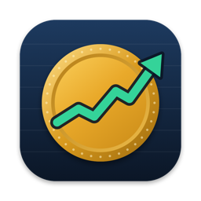
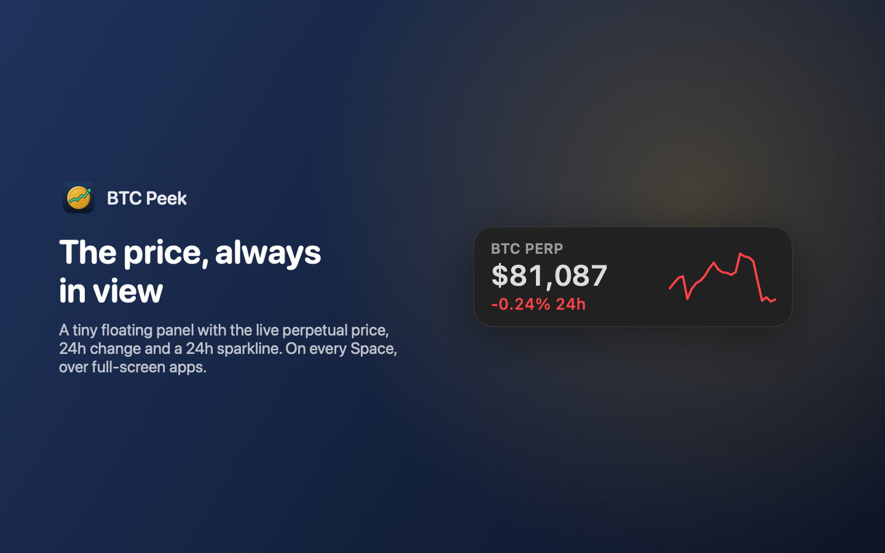
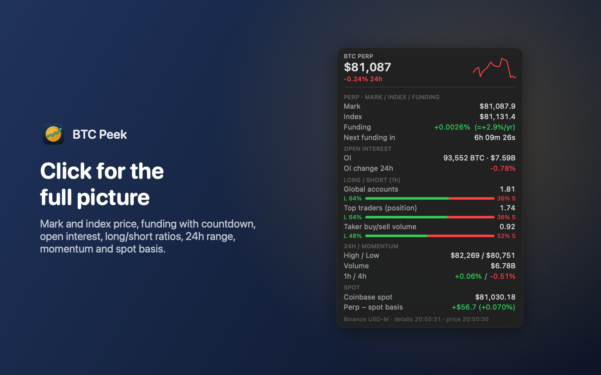

BTC Peek
for macOS
A tiny always-on-top panel with the live BTC perpetual-futures price, 24h change and a 24-hour sparkline. It floats on every Space and over full-screen apps, with no Dock icon and no main window.

Click the panel for mark and index price, funding with a countdown, open interest, long/short ratios, 24h range, momentum and the perp-spot basis.

Private by design. No account, no analytics, no tracking, no ads. The app only downloads public market data. Privacy policy
Requires macOS 13 Ventura or later. Questions? See Support.